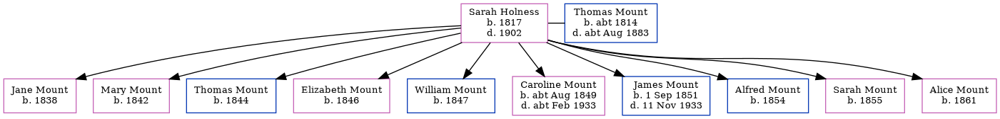

Sarah Harvey Mount (née Holness) 1817 - 1902
[ Home ] | [ Calendar ] | [ Surnames Index ] | [ Errors ] | [ Family History ]Sarah Holness, the wife of Thomas Mount (the four times great-uncle of Nigel Horne), was born in Herne, Kent, England in 18171,2 and married Thomas (a labourer with whom she had 10 children: Jane, Mary, Thomas, Elizabeth, William, Caroline, James, Alfred, Sarah Ann and Alice) at St Martin's Church in Herne on 14 Jul 18383.
During her life, she was living at Mortimer Street, Herne Bay, Kent, England on 30 Mar 18515; at King Street in Herne Bay on 7 Apr 18611 and on 2 Apr 18714; and on Salts Lane in Herne Bay on 3 Apr 18812.
She died in 1902.
Children
- Jane was born in 1838
- Mary was born in 1842
- Thomas was born in 1844
- Elizabeth was born in 1846
- William was born in 1847
- Caroline was born c. Aug 1849
- James was born on 1 Sept 1851
- Alfred was born in 1854
- Sarah Ann was born in 1855
- Alice was born in 1861
Citations
- 1861 England, Wales & Scotland Census - Findmypast (was age 42 and the wife of the head of the household)
- 1881 England, Wales & Scotland Census - Findmypast (was age 64 and the wife of the head of the household)
- England Marriages 1538-1973 - Findmypast
- 1871 England, Wales & Scotland Census - Findmypast (was age 52 and the wife of the head of the household)
- 1851 England, Wales & Scotland Census - Findmypast (was age 31 and the wife of the head of the household)
Media
1871 England, Wales & Scotland Census - GBC/1871/0014201273
Family Tree
Map
Generated by ged2site. Last updated on Jul 3, 2024
Known Issues
Death date (1902) has no citations
Date of death is known, but not place